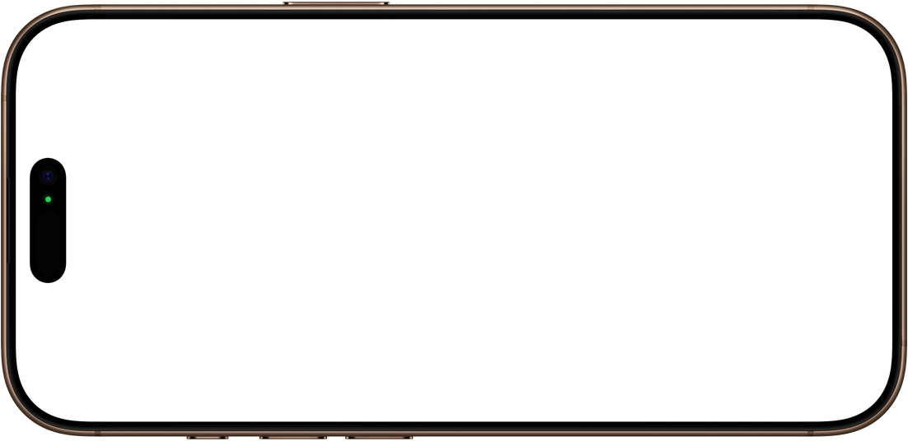

camera zoom
New 48MP
Ultra Wide camera.
Viva la resolution.


iPhone 16 Pro adds a second 48MP camera to the Pro camera system. The new 48MP Ultra Wide camera has a more advanced quad-pixel sensor for super-high-resolution 48MP ProRAW and HEIF photos with autofocus.
So you can capture a mesmerizing new level of detail in macro photos and sweeping, wide-angle shots.
-

0.5x Ultra Wide -

1x Fusion 24 mm -

1.2x Fusion 28 mm -

2x Telephoto -

5x Telephoto